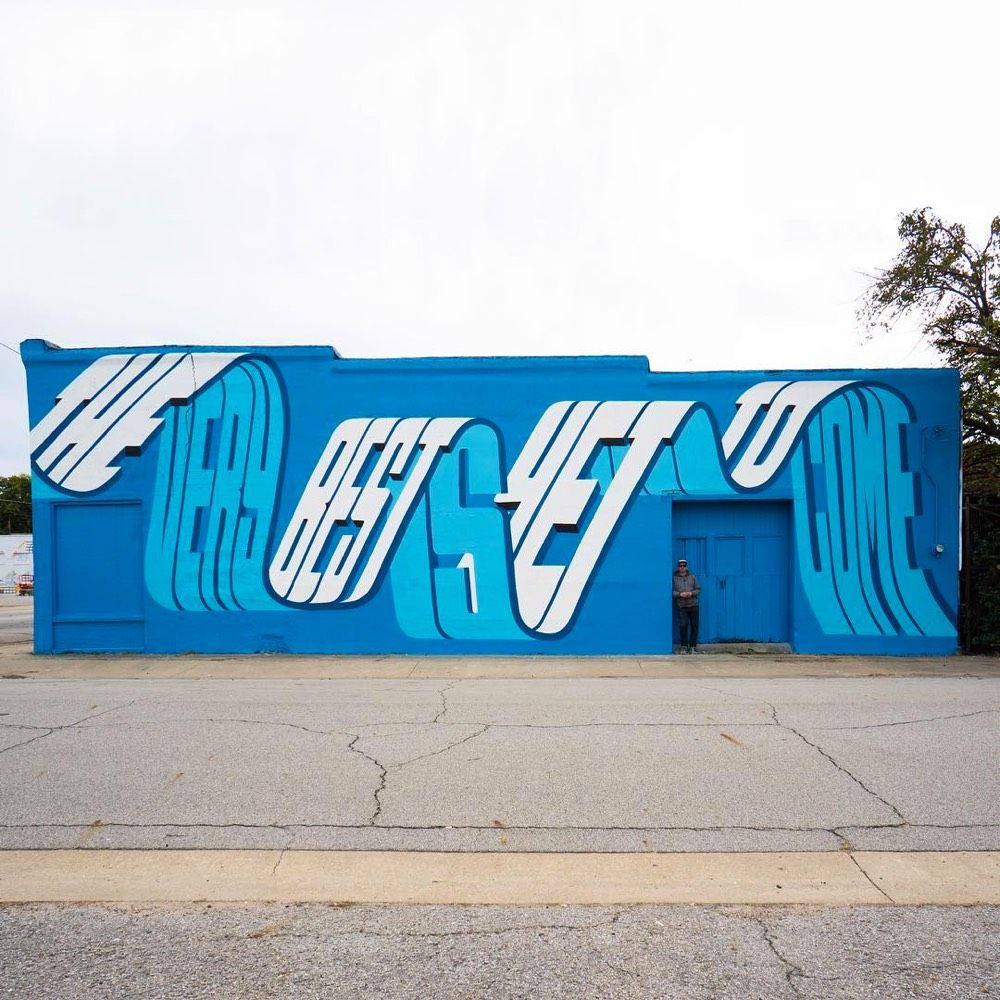
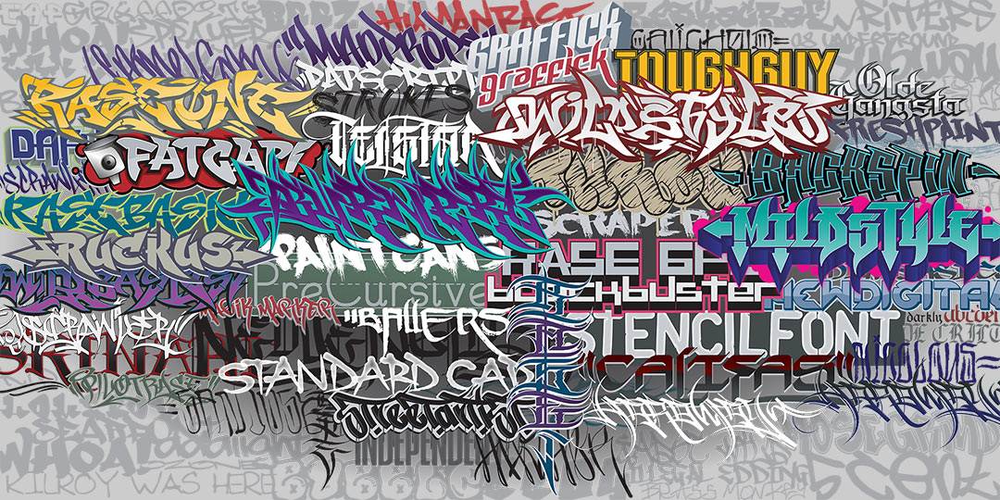

Tema 7: Impacto de la tipografía

Letras, íconos y simbología
Para el arte urbano, la tipografía, los símbolos y los íconos representan una herramienta importante como parte de la obra. Esto se debe a que muchos de los estilos usados en el arte urbano, en especial en el Graffiti, hacen un fuerte uso de palabras y elementos reconocibles.
Tipos de Letra
Los tipos de letra son los símbolos usados en la escritura e imprenta que representan las letras y elementos legibles de un idioma. En computación, reciben el nombre de “fuente”. Es común que se utilicen de modo indistinto ciertas palabras, como por ejemplo tipografía, para aludir a “tipo de letra” La aplicación de la tipografía como elemento distintivo en el arte urbano se ha usado desde sus inicios, ya que es un elemento que ayuda al artista a expresarse en su arte. Una selección de tipografía puede afectar de gran manera la forma en la que las personas ven la obra.
Qué tipos de tipografía existen y cómo usarlas | Conceptos básicos de diseño gráfico
GCFAprendeLibre: Link
ESTILO
Es una serie de características estéticas de forma o color que diferencian las piezas de cada grafitero, aunque cada uno desarrolla un estilo propio, pueden ser clasificados en algunos grupos generales de acuerdo con la legibilidad de letras o la composición entre ellas estos grupos o estilos son:
• FUNKY: Son letras definidas de fácil legibilidad, espaciadas entre una letra y otra, se caracterizan por su estilo sencillo y directo
• SEMI WILD: Genera ligaduras entre las letras, de tal forma que todas las letras están conectadas en algún punto de su estructura, esto hace que la legibilidad sea menor en comparación con el estilo Funky, pero aun es legible
• WILD: Las letras se mezclan entre ellas de tal forma que a primera vista no es fácil distinguir donde termina una letra e inicia otra, incluyen flechas que dan dinamismo a la composición
• 3D: La idea principal de este estilo es generar la sensación de profundidad en la pieza, esto se logra bien sea proyectando las letras a un punto de fuga o generando biseles en las letras jugando con la perspectiva de la composición
• DIRTY – GARBAJE: tanto las letras como la composición son deformadas de forma más allá de lo tradicional generando un estilo que podría definirse como sucio.

Tipografias Link

Wild Link

Funky Link

Semi Wild Link

Dirty/Garbage Link

3D Link
Diseño Tipográfico
Debido a su importancia, muchos artistas urbanos han empezado a desarrollar elementos que se basan en el diseño tipográfico como elemento clave en sus piezas. El diseño tipográfico es una de las bases importantes del Diseño Gráfico. De acuerdo a distintas fuentes, se puede definir el diseño tipográfico como “una disciplina en donde se relacionan las familias y tamaños de letras y donde se hace uso de elementos como los espacios entre ellas, los interlineados y medidas para generar un elemento que permite darle énfasis al mensaje.”
Íconos y símbolos
Un ícono se define como un “elemento, imagen, gráfica o representación, un signo que representa un elemento u objeto ya sea por virtud de semejanza, o analogía”. Un símbolo, se define como una “marca o elemento usado como representación de un objeto, función o proceso.” Los símbolos e iconos existen desde el momento que nació la escritura, y cumplen una función necesaria: permiten que podamos comunicarnos unos con otros. Es normal verlos en nuestro día a día, y su significado es de gran importancia. Es por ello que los símbolos e iconos se vuelven un elemento necesario en cualquier forma de arte. En el arte urbano, se vuelven un elemento que permite darle mayor significado a la obra. En muchos casos, son elementos que bien pueden ser decorativos, o pueden ser elementos clave del diseño. Eso depende en gran parte de su uso y la importancia que el artista le dé a los iconos y símbolos que utiliza. Una utilización común en el arte urbano, es usar íconos para enfatizar el mensaje de la obra, haciendo uso comúnmente de elementos conocidos ya sea de manera interna en el contexto, o elementos reconocibles del arte popular para darle mayor nivel de entendimiento y conexión entre la obra y su público objetivo.
Videos de apoyo
Te invitamos a ver el siguiente video con el cual puedes aprender un poco màs del tema.